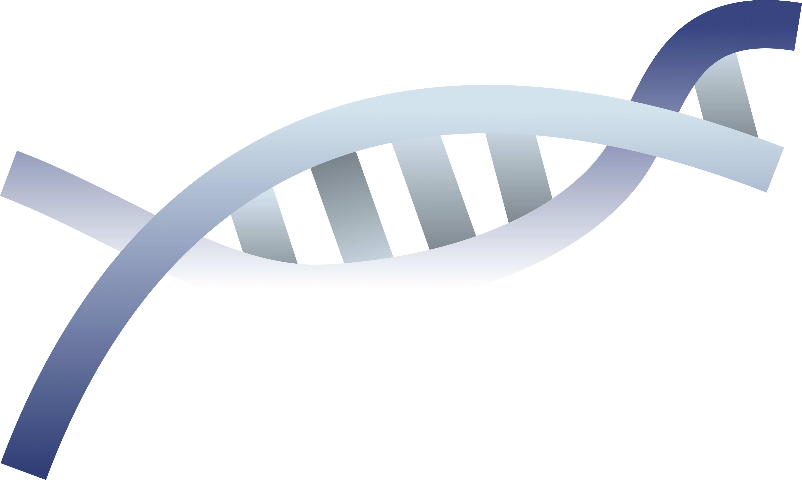
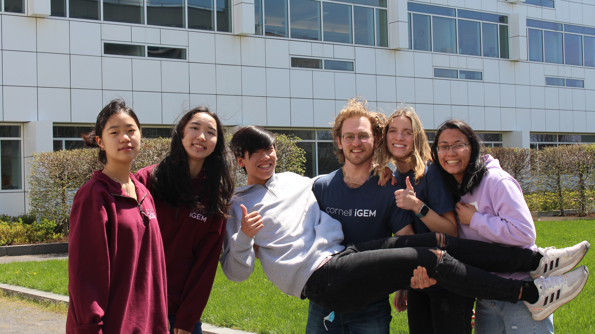

ABOUT


The Cornell iGEM Project Team is an award-winning synthetic biology group working to solve real-world challenges in health, environment, and biotechnology.
Five Subteams
Wet Lab, Product Development, Policy & Practice, Business, Wiki & Design
Year-round Research
School Year + Summer Collaboration
Global Competition
300+ Teams at the iGEM Grand Jamboree in Paris!
Genentech developed modified E. coli bacterium to produce insulin on commercial scales
Genetically engineered to produce beta-carotene, a precursor to vitamin A to decrease vitamin A deficiency
Development of standardized biological parts used to create genetic circuitsfor synthetic biology applications
Development of the Gibson assembly method for synthetic DNA cloning
CRISPR-Cas9 system developed for genomic editing with precision
Synthetic biology describes how scientists redesign and repurpose natural machinery in the biological world to solve local and global issues! Cornell iGEM utilizes these same inspirations, technologies, and innovations to create impactful solutions for our communities.
The iGEM Grand Jamboree is an annual international competition where hundreds of teams gather to present projects, exchange ideas, and explore advances in synthetic biology. Teams from around the world come together to showcase their work and engage with researchers, companies, and peers.
📊 Project Presentations
Insert img + description
📌 Poster Sessions
Insert img + description
🧪 Workshops
Insert img + description
💼 Making Connections
Insert img + description
The Wet Lab subteam is responsible for the design, construction, and validation of the biological and genetic components of our project. We build and test synthetic biology systems that form the foundation of our engineered solutions.
Our work uses core synthetic biology techniques, including:
These methods allow us to construct and verify genetic circuits that drive our project.

The product development subteam is an engineering-focused, user-centered, end-to-end development team. Our end goal is to bring iGEM's biological innovations to the real world.
We apply product design thinking and various engineering disciplines to explore user needs, generate a problem statement, design and prototype a solution to the problem, and create product specifications to prepare for manufacturing.